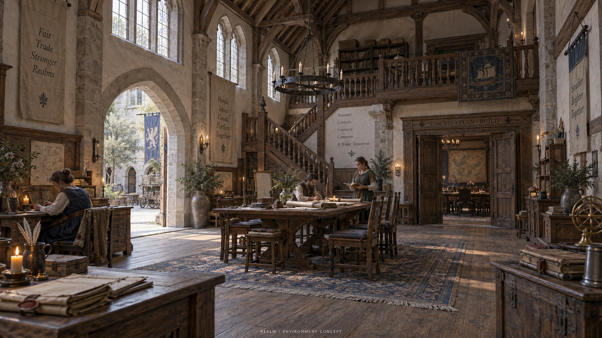
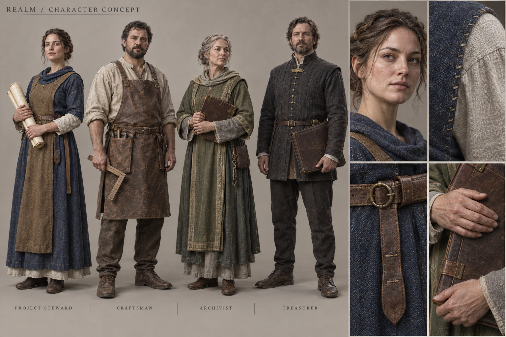
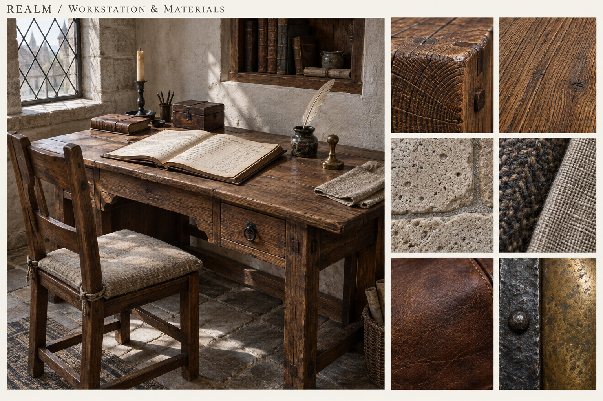

Tỷ lệ người
Bàn khoảng 75 cm, ghế khoảng 46 cm. Mọi điểm ngồi đều có chỗ cho chân, lối tiếp cận và khoảng đứng lên.
Hội quán bằng đá và gỗ sồi, ánh sáng ban ngày, con người và đồ vật có sức nặng. Chất lượng hình ảnh là mục tiêu cần đạt ở mọi góc nhìn.
THIẾT KẾ ĐỀ XUẤTCHƯA CHỌN ENGINECONCEPT · KHÔNG PHẢI BẢN CHẠY
Sảnh chung nối những phòng có mục đích rõ ràng. Lối đi thoáng, bàn ghế vừa người, cửa sổ có chiều sâu. Medieval nằm trong cấu tạo thật của không gian.
Bàn khoảng 75 cm, ghế khoảng 46 cm. Mọi điểm ngồi đều có chỗ cho chân, lối tiếp cận và khoảng đứng lên.
Đá chịu lực, dầm có mộng và chốt; vữa sáng giữ phòng dễ nhìn. Chi tiết được đặt ở nơi mắt và tay thường tới.
Ánh sáng cửa sổ làm nền. Nến và lò sưởi tạo điểm nhấn. Văn phòng được chăm sóc, không phủ bụi và đồ cũ khắp nơi.
Sơ đồ khái niệm, không theo tỷ lệ. Khối chính dự kiến 18 × 26 m; tầng lửng và sân là phần bổ sung.
Bốn họ trang phục làm chuẩn: điều phối, chế tác, lưu trữ và giữ sổ. Mỗi bộ có thể dùng cho nhiều giới tính, tuổi và thân hình; quyền trong hệ thống không phụ thuộc trang phục.

Da có biến thiên, mí mắt và đường tóc rõ. Dáng người và khuôn mặt đa dạng; không phủ bóng đồng đều hoặc dùng một mặt cho mọi nhân vật.
Vải có độ dày, đường khâu và nếp theo sức căng. Phụ kiện nhỏ đúng nghề. Tránh giáp khổng lồ và quần áo cứng như cao su.
Đi, dừng, quay, ngồi, viết, đọc và trò chuyện. Tay chạm đúng bàn, chân bám nền; hoạt ảnh gắn với trạng thái thật.
Chốt chất lượng ở bàn làm việc trước: kết cấu, mép gỗ, hướng thớ, da, vải và kim loại. Một vật thể tốt phải đọc được hình khối ngay cả khi tắt hậu kỳ.

Palette định hướng, không phải thông số vật liệu đo đạc. Workflow tham chiếu: Epic — Physically Based Materials.
HUD gọn khi di chuyển. Tới bàn, tác vụ hiện thành giao diện rõ chữ. Luôn có đi nhanh, tìm kiếm và chế độ tập trung. Bên dưới là mockup tương tác với dữ liệu mẫu.
Phiên tập trung / Bàn bên cửa sổ
Khi tích hợp: có trạng thái lưu, lỗi và quyền truy cập rõ ràng. Đóng tác vụ sẽ trở lại đúng bàn đang ngồi.
Bấm “Thu gọn” và “Mở công việc” để xem hai trạng thái. Nút mic chỉ mô phỏng, không truy cập thiết bị.
Chốt kiến trúc, tỷ lệ người, trang phục, vật liệu và mức độ fantasy.
Một ô 6 × 8 m, một bàn, hai ghế, một cửa sổ và một nhân vật có rig.
Đi, ngồi, mở tác vụ, đổi góc nhìn. Đo chất lượng, tốc độ và độ ổn định trên thiết bị thật.
Nhân rộng khi khu mẫu đạt chuẩn. Sau đó kiểm tra nhiều người dùng và các luồng làm việc.
“Chuẩn Unreal” là đích hình ảnh. Công nghệ dựng và engine sẽ được chọn sau phép thử bằng một cảnh chạy thực tế.
Tham chiếu chi phí và các mức chất lượng: Epic — Lumen Performance Guide. Không có cam kết hiệu năng từ concept này.